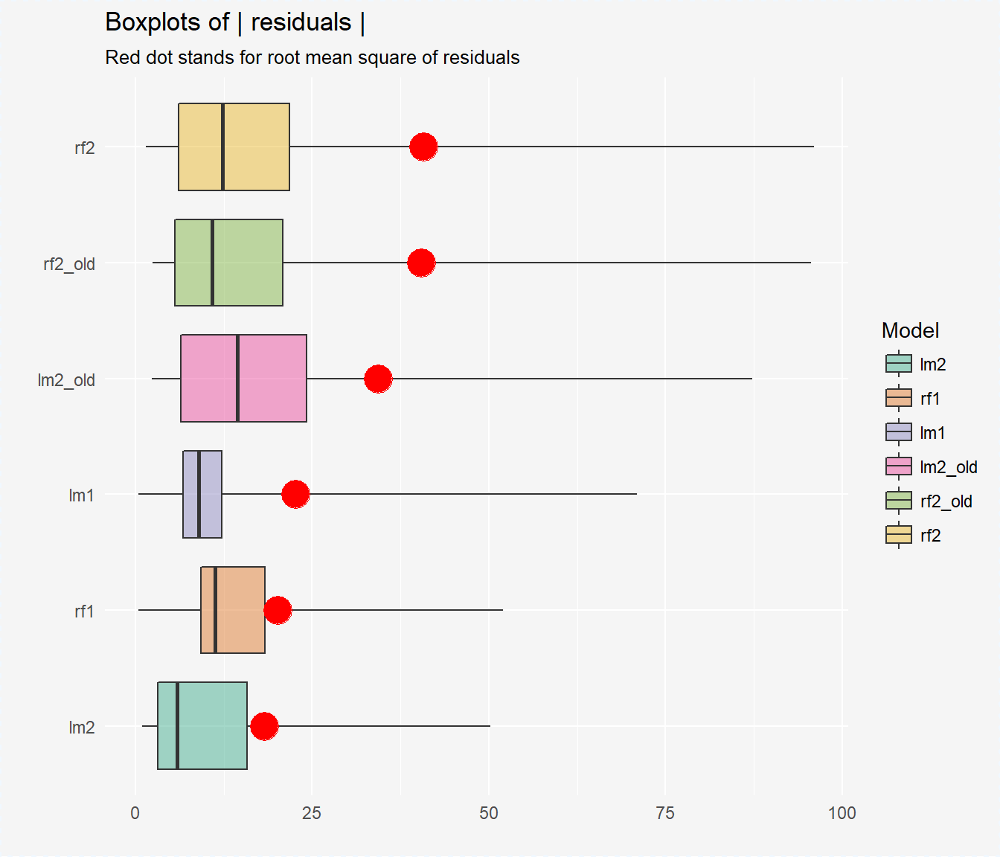
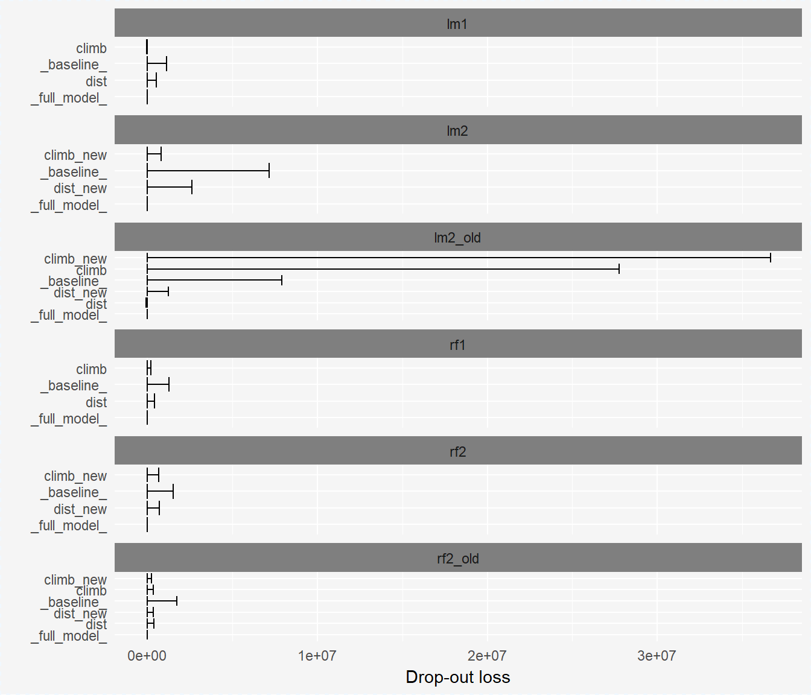

SAFE examples - hills dataset
Anna Gierlak
example_hills.RmdModele oparte na oryginalnych danych:
model_lm1 <- lm(time ~ ., data = hills[1:12,])
explainer_lm1 <- explain(model_lm1, data = hills[13:24,1:2], y = hills[13:24,3], label = "lm1")
set.seed(111)
model_rf1 <- randomForest(time ~ ., data = hills[1:12,])
explainer_rf1 <- explain(model_rf1, data = hills[13:24,1:2], y = hills[13:24,3], label = "rf1")Transformacje (package=strucchange, type=linear):
trans_prop <- transform_propositions(explainer_rf1, package = "strucchange", type = "linear", plot = TRUE, interactions = FALSE)
#> These are the propositions for variables transformations:
#>
#> Transformation for 'dist' variable:
#> <=9.5: 2.55531135763416 * dist + 33.1226980588813
#> >9.5: 16.8762532888888 * dist - 120.320406074999
#>
#> Transformation for 'climb' variable:
#> <=1312: 0.00327055700472948 * climb + 37.1182955490293
#> >1312: 0.0177873256786231 * climb + 21.4533929663051
data1 <- transform_data(hills[13:24,1:2], trans_prop, keep_old = FALSE) #tylko nowe zmienne
data1_old <- transform_data(hills[13:24,1:2], trans_prop, keep_old = TRUE) #nowe + stare zmienne
data1 <- cbind(hills[13:24,3], data1)
colnames(data1)[1] <- 'time'
data1_old <- cbind(hills[13:24,3], data1_old)
colnames(data1_old)[1] <- 'time'| time | dist | climb | dist_new | climb_new | |
|---|---|---|---|---|---|
| Lomonds | 65.000 | 9.5 | 2200 | 57.39816 | 60.58551 |
| Cairn Table | 44.133 | 6.0 | 500 | 48.45457 | 38.75357 |
| Eildon Two | 26.933 | 4.5 | 1500 | 44.62160 | 48.13438 |
| Cairngorm | 72.250 | 10.0 | 3000 | 48.44213 | 74.81537 |
| Seven Hills | 98.417 | 14.0 | 2200 | 115.94714 | 60.58551 |
| Knock Hill | 78.650 | 3.0 | 350 | 40.78863 | 38.26299 |
data2 <- transform_data(hills[25:nrow(hills),1:2], trans_prop, keep_old = FALSE)
data2_old <- transform_data(hills[25:nrow(hills),1:2], trans_prop, keep_old = TRUE)
model_lm2 <- lm(time ~ ., data = data1)
explainer_lm2 <- explain(model_lm2, data = data2, y = hills[25:nrow(hills),3], label = "lm2")
model_lm2_old <- lm(time ~ ., data = data1_old)
explainer_lm2_old <- explain(model_lm2_old, data = data2_old, y = hills[25:nrow(hills),3], label = "lm2_old")
set.seed(111)
model_rf2 <- randomForest(time ~ ., data = data1)
explainer_rf2 <- explain(model_rf2, data2, hills[25:nrow(hills),3], label = "rf2")
set.seed(111)
model_rf2_old <- randomForest(time ~ ., data = data1_old)
explainer_rf2_old <- explain(model_rf2_old, data2_old, hills[25:nrow(hills),3], label = "rf2_old")
summary(model_lm1)
#>
#> Call:
#> lm(formula = time ~ ., data = hills[1:12, ])
#>
#> Residuals:
#> Min 1Q Median 3Q Max
#> -16.8576 -1.9977 0.5615 3.9828 10.0006
#>
#> Coefficients:
#> Estimate Std. Error t value Pr(>|t|)
#> (Intercept) -16.775758 4.264504 -3.934 0.00344 **
#> dist 6.459476 0.407896 15.836 7.04e-08 ***
#> climb 0.014405 0.001447 9.952 3.72e-06 ***
#> ---
#> Signif. codes: 0 '***' 0.001 '**' 0.01 '*' 0.05 '.' 0.1 ' ' 1
#>
#> Residual standard error: 8.42 on 9 degrees of freedom
#> Multiple R-squared: 0.9851, Adjusted R-squared: 0.9818
#> F-statistic: 298.1 on 2 and 9 DF, p-value: 5.964e-09
summary(model_lm2)
#>
#> Call:
#> lm(formula = time ~ ., data = data1)
#>
#> Residuals:
#> Min 1Q Median 3Q Max
#> -16.306 -11.605 -3.523 6.459 49.308
#>
#> Coefficients:
#> Estimate Std. Error t value Pr(>|t|)
#> (Intercept) -30.0193 24.8276 -1.209 0.2574
#> dist_new 0.6914 0.3128 2.210 0.0544 .
#> climb_new 0.8144 0.5329 1.528 0.1608
#> ---
#> Signif. codes: 0 '***' 0.001 '**' 0.01 '*' 0.05 '.' 0.1 ' ' 1
#>
#> Residual standard error: 19.68 on 9 degrees of freedom
#> Multiple R-squared: 0.5771, Adjusted R-squared: 0.4831
#> F-statistic: 6.14 on 2 and 9 DF, p-value: 0.02081